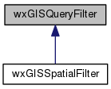

|
|
Version: 0.5.0 |


wxGISQueryFilter Class Reference
Attributes query filter. More...
#include <filter.h>
Inheritance diagram for wxGISQueryFilter:

Public Member Functions | |
| wxGISQueryFilter (const wxString &sWhereClause) | |
| wxGISQueryFilter & | operator= (const wxGISQueryFilter &obj) |
| wxGISQueryFilter (const wxGISQueryFilter &obj) | |
| virtual void | SetWhereClause (wxString sWhereClause) |
| virtual wxString | GetWhereClause (void) const |
Protected Attributes | |
| wxString | m_sWhereClause |
Detailed Description
Attributes query filter.
Spatial (by geometry) query filter.
The documentation for this class was generated from the following files:
- D:/work/projects/wxGIS/include/wxgis/datasource/filter.h
- D:/work/projects/wxGIS/src/datasource/filter.cpp
- Generated on Mon Oct 28 2013 04:47:59 for wxGIS by
 1.8.5
1.8.5